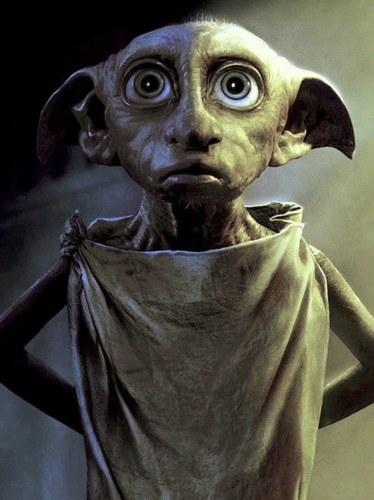

Game

Hogwarts Legacy
Playstation | Xbox | PC
Hogwarts Legacy é um RPG de ação e mundo aberto ambientado no mundo apresentado nos livros de Harry Potter. Agora você pode assumir o controle da ação e criar sua própria aventura. Descubra a sensação de viver em Hogwarts enquanto faz aliados, luta contra bruxos das trevas e, por fim, decide o destino do mundo bruxo. Seu legado é o que você faz dele.
Saiba mais
Casas de Hogwarts

O segredo das
Casas de Hogwarts
Os alunos são encaminhados para uma das Casas por meio da decisão do Chapéu Seletor, um artefato mágico capaz de ler a ambição de um indivíduo. Seu julgamento, por vezes impreciso, leva os estudantes para uma das quatro casas de Hogwarts: Grifinória, Lufa-Lufa, Corvinal e Sonserina.
Leia mais
Levantem suas varinhas

Professora Minerva
Maggie Smith
Atriz Maggie Smith, Professora Minerva de 'Harry Potter', morre aos 89 anos
Leia mais
Parque temático

Disney Orlando
Ministério da Magia
O novo parque de Harry Potter vai reproduzir o Ministério da Magia, onde os visitantes do parque vivenciarão a era do mundo mágico da década de 1920. Esta terra apresenta uma mistura de Paris nos filmes de Animais Fantásticos e do Ministério da Magia Britânico de Harry Potter. A inauguração será em 2025.
Leia mais
20 anos de HP

HBO | MAX
Especial 'Harry Potter'
Produção foi lançada na HBO MAX para comemorar os 20 anos da estreia da franquia nos cinemas
Leia mais